\(\displaystyle \left[\begin{matrix}0.5 & 0.2 & 0.3\\0.2 & 0.6 & 0.1\\0.3 & 0.2 & 0.6\end{matrix}\right]\)
\(\displaystyle \left[\begin{matrix}0.339\\0.275333333333333\\0.385666666666667\end{matrix}\right]\)
Here is the system of equations that represents the scenario.
Here is the transition matrix. The market shares after 3 years are shown below given that the initial market shares are equal, which meant that the initial vector is [1/3, 1/3, 1/3].
\(\displaystyle \left[\begin{matrix}0.5 & 0.2 & 0.3\\0.2 & 0.6 & 0.1\\0.3 & 0.2 & 0.6\end{matrix}\right]\)
\(\displaystyle \left[\begin{matrix}0.339\\0.275333333333333\\0.385666666666667\end{matrix}\right]\)
As seen in the below graphs, the effect of launching campaign 2 is better than campaign 1. Note that campaign 0 shows what would happen if no campiagn is launched. In that scenario, company C would have the highest market share whereas we would be stuck in the middle. Launching campaign 1 would not change this situation but we would be closer to C. However, launching campaign 2 would allow us to surpass C and have the highest market share, bringing us to 0.4.
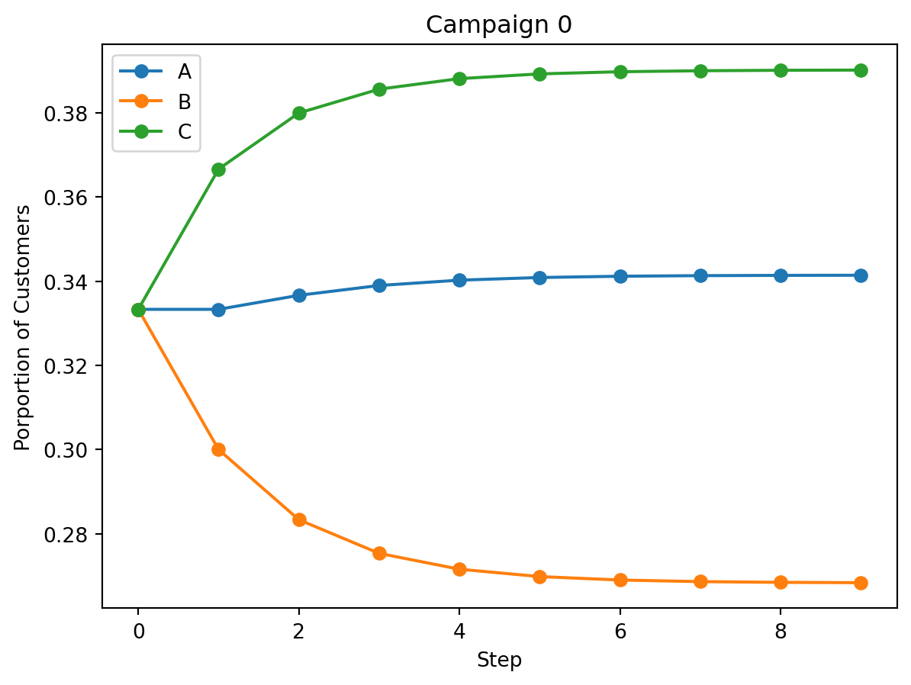
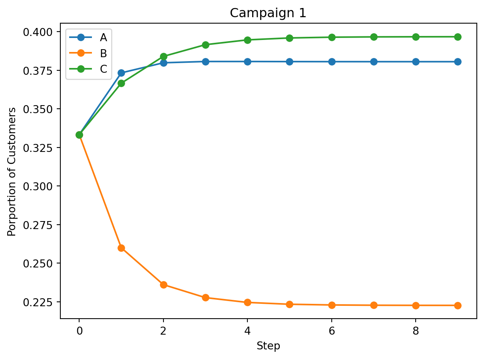
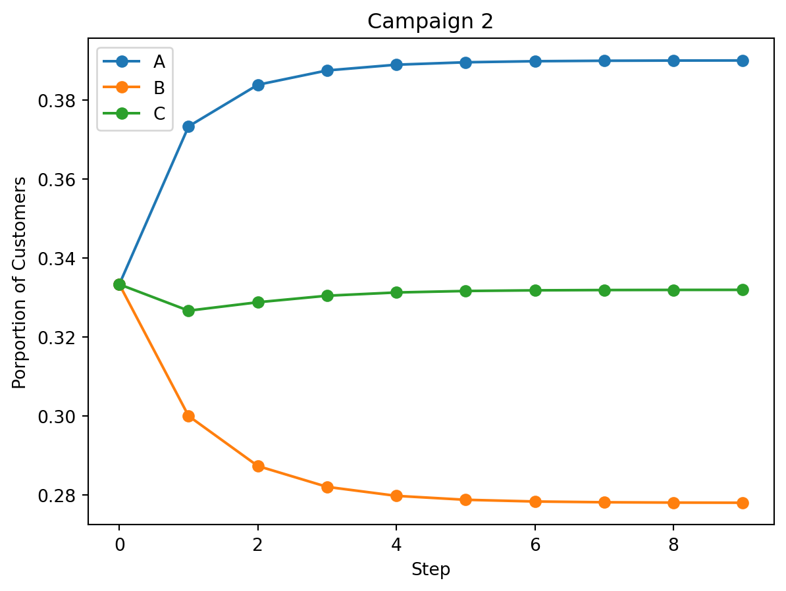
You might have noticed that we’re assuming that the market shares are equal at the beginning. However, it is shown that the market shares would be the same after a couple years regardless of the initial market shares. An example is seen below where the initial market shares are [0, 0, 1].
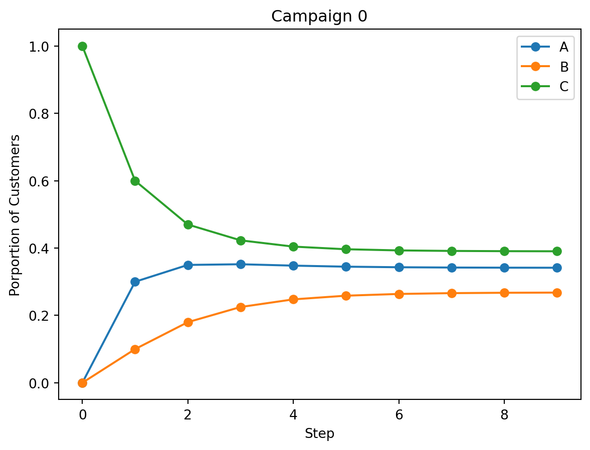
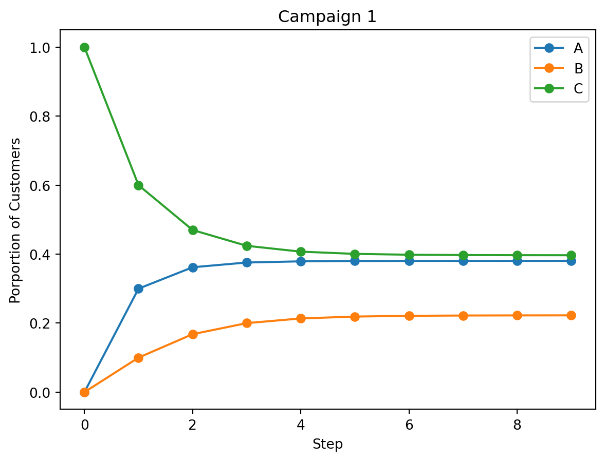
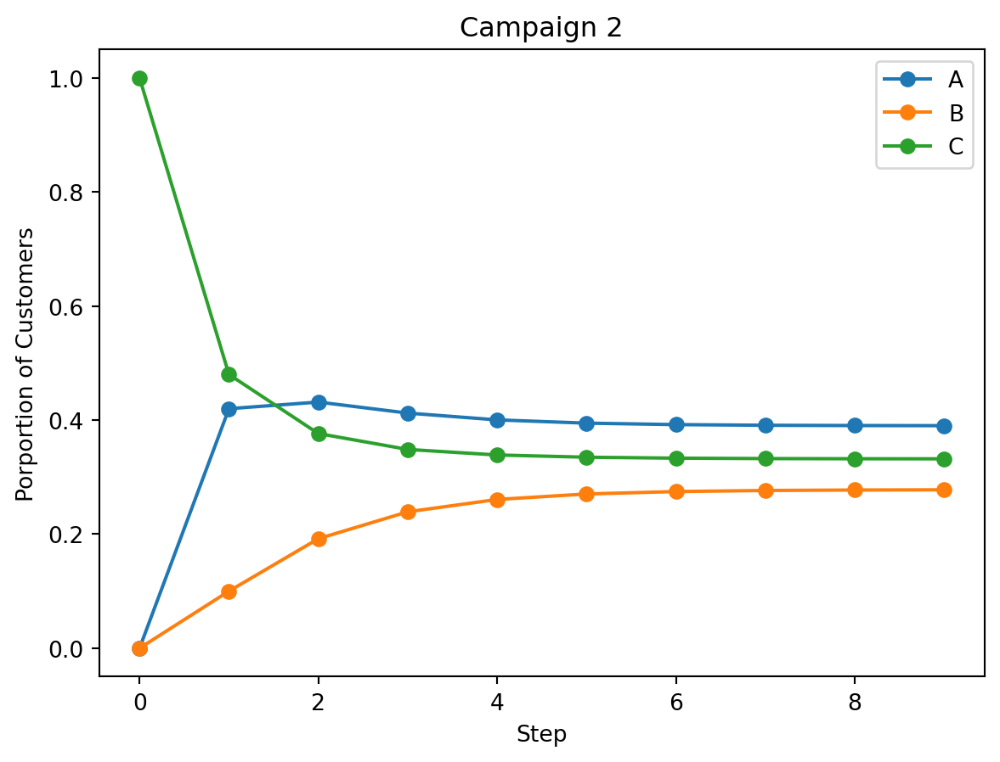
Further analysis shows that there is a diminishing marginal return if more money is spent on a campaign to take more customers away from B or C. The is shown as the curves are concave down. Additionally, these graphs also show that spending money on taking C’s customers is more valuable than taking B’s because A increases around 0.15 for the former and 0.1 for the latter. Taking C’s customers also makes A the market leader by a significant margin. It should be noted that this also assumes the amount of money it takes to take B’s customers is the same as taking C’s customers.
Additionally, although the initial market share doesn’t matter, it is important to note that we’re assuming these events are independent of each other. For example, perhaps customers are more likely to follow the pack if a majority of the population are using companies which means that the market would be more volatile than my simulations suggest. This would also mean that it’s more important for us to have the highest market share at the beginning, making initial market shares more important.
Before I start, I want to preface this problem by saying that I wasn’t too clear what the procedure that was listed meant. For example, it said “One way to proceed is simply to use trial and error until you think you’ve hit on a reasonable value of D that is, the one that gives the best approximation to t = 180 from the t = 360 values” I wasn’t sure where t came from. Anyway, I think my result is decent and I’ll try to explain what I did.
The time dependent reaction diffusion equation is shown below and I translated it to matrix form.
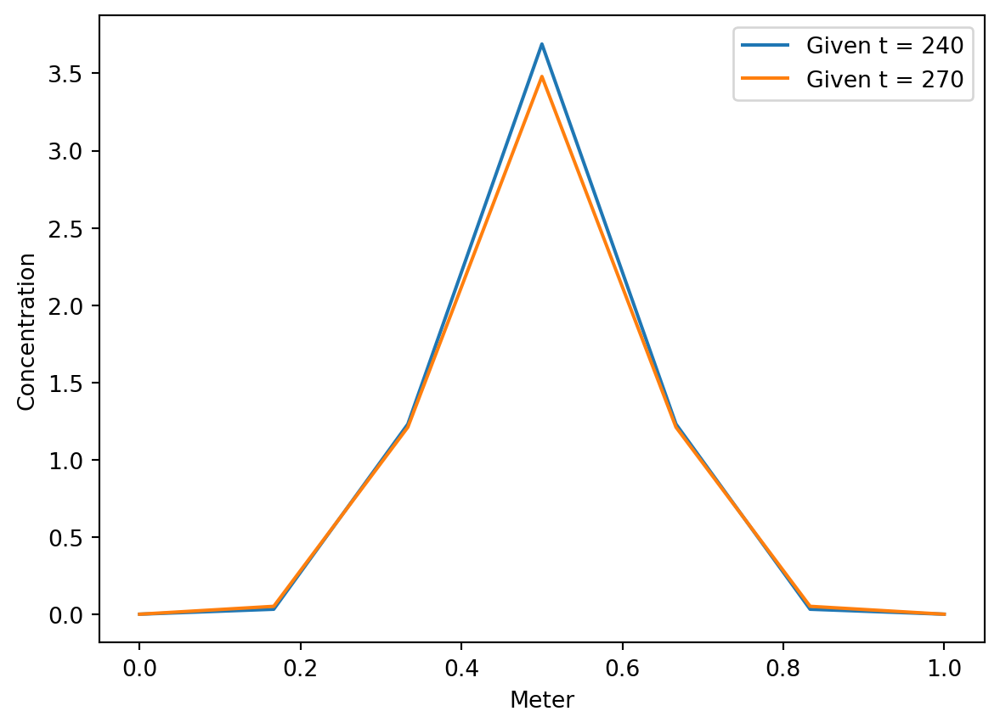
I identified the constants: N = 7, h = 1/6, and k = 1. After a preliminary graph of the table, I thought it looked similar to a normal distribution so I defined that as my function. The mean has to be 0.5 as seen in the prelimina rly graph. This meant that my parameters that I can tweak to get the best approximation are the standard deviation, D, and the initial concentration.
Here is the code so far.
# constants and initial conditions
N = 7 # number of nodes
h = 1/6 # distance between nodes
k = 1 # time step
mean = 3/6
M = sp.zeros(N) # matrix M
for i in range(N):
if (i>1):
M[i-1,i] = 1
if (i > 0) and (i < N-1):
M[i,i] = -2
if (i<N-2):
M[i+1,i] = 1
# parameters
D = 0
std = 0
y_t0 = sp.Matrix([0, 0, 0, 0, 0, 0, 0]) # initial condition
def normal_distribution_function(x):
s = std
m = mean
y = 1/(s*np.sqrt(2*np.pi))*(sp.exp(-1/2*((x-m)/s)**2))
return y
def reaction_diffusion_equation(y):
return k*D/h**2 * M * y + y + k * y.applyfunc(normal_distribution_function)After this, I tweaked the parameters to get the best approximation. I found that D = 0.000005, mean = 3/6, std = 1, and the initial concentration of [0, 0, 1.25, 4, 1.25, 0, 0] gave me the best approximation. The comparison between the approximation and the actual values for t = 240 and t = 270 are shown below.
std = 0.1
D = 0.000005
y_t0 = sp.Matrix([0, 0, 1.25, 4, 1.25, 0, 0]) # initial condition
plt.figure()
t = 240
y_t = y_t0
for i in range(t):
y_t = reaction_diffusion_equation(y_t)
yplot = [item[0] for item in y_t.tolist()]
plt.plot(meter, yplot, label = 'Predicted t = 240')
plt.plot(meter, given1, label='Given t = 240', alpha=0.5)
plt.legend()
plt.xlabel('Meter')
plt.ylabel('Concentration')
plt.figure()
t = 270
y_t = y_t0
for i in range(t):
y_t = reaction_diffusion_equation(y_t)
yplot = [item[0] for item in y_t.tolist()]
plt.plot(meter, yplot, label = 'Predicted t = 270')
plt.plot(meter, given2, label='Given t = 270', alpha=0.5)
plt.legend()
plt.xlabel('Meter')
plt.ylabel('Concentration')Text(0, 0.5, 'Concentration')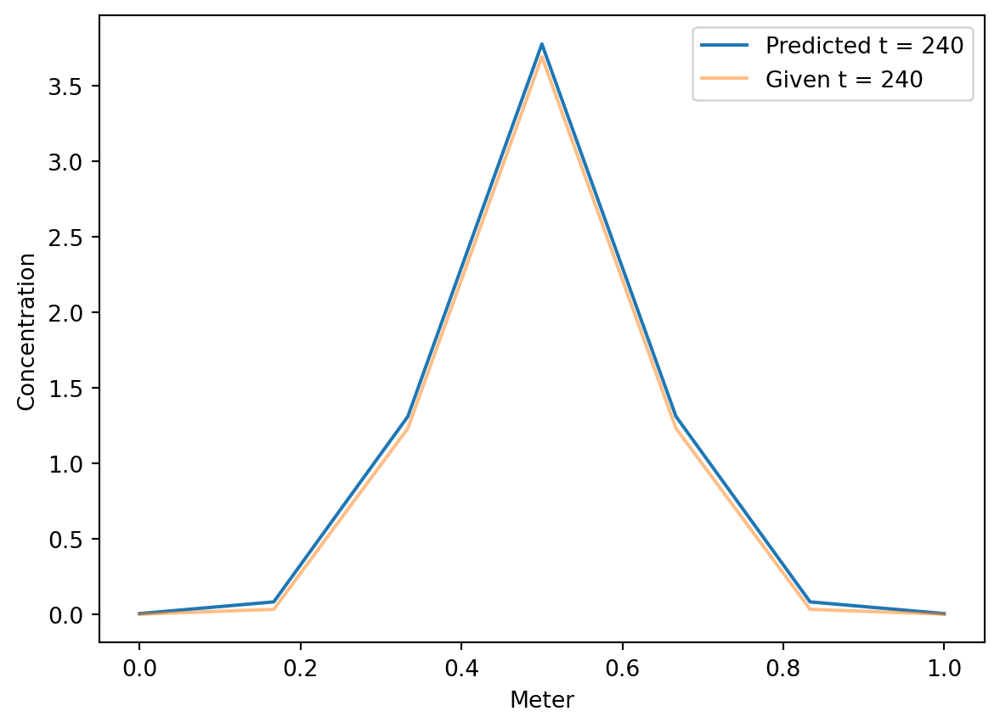
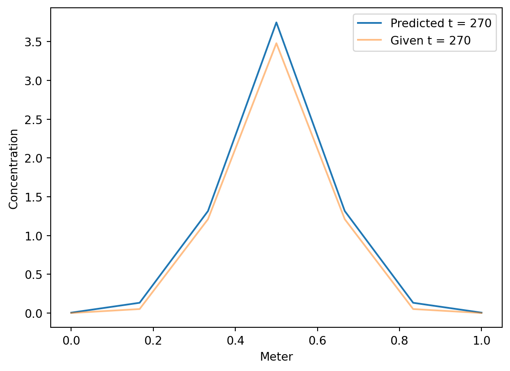
For t = 210, I got:
\(\displaystyle \left[\begin{matrix}0.00339238903943445\\0.0627957873877538\\1.30195014227816\\3.80169149504986\\1.30195014227816\\0.0627957873877538\\0.00339238903943445\end{matrix}\right]\)
For t = 300, I got:
\(\displaystyle \left[\begin{matrix}0.00504182505136563\\1.34308086470352\\1.32654572490819\\3.72231947194962\\1.32654572490819\\1.34308086470352\\0.00504182505136563\end{matrix}\right]\)
array([[0., 1., 0., 1., 0., 0., 0.],
[0., 0., 0., 1., 0., 1., 0.],
[1., 1., 0., 1., 1., 0., 0.],
[0., 0., 0., 0., 1., 0., 0.],
[1., 1., 0., 0., 0., 1., 1.],
[1., 0., 1., 1., 0., 0., 0.],
[1., 1., 1., 1., 0., 1., 0.]])| Wins | Losses | Ratio | |
|---|---|---|---|
| Team | |||
| 7 | 5.0 | 1.0 | 5.0 |
| 3 | 4.0 | 2.0 | 2.0 |
| 5 | 4.0 | 2.0 | 2.0 |
| 6 | 3.0 | 3.0 | 1.0 |
| 1 | 2.0 | 4.0 | 0.5 |
| 2 | 2.0 | 4.0 | 0.5 |
| 4 | 1.0 | 5.0 | 0.2 |
# directed graph
G = nx.DiGraph()
rows, columns = M.shape
for i in range(rows):
for j in range(columns):
if M[i][j] == 1:
G.add_edge(i+1,j+1)
nx.draw(G, with_labels=True, node_size = 5000, node_color = 'lightblue', font_size = 20, font_color = 'black')
Msquared = np.dot(M,M)
vertex_power_matrix = Msquared + M
vertex_power = np.sum(vertex_power_matrix, axis=1)
df = pd.DataFrame({'Team': team, 'Vertex Power': vertex_power}).sort_values(by='Vertex Power', ascending=False).set_index('Team')
df| Vertex Power | |
|---|---|
| Team | |
| 7 | 17.0 |
| 5 | 16.0 |
| 3 | 13.0 |
| 6 | 10.0 |
| 2 | 6.0 |
| 1 | 5.0 |
| 4 | 5.0 |
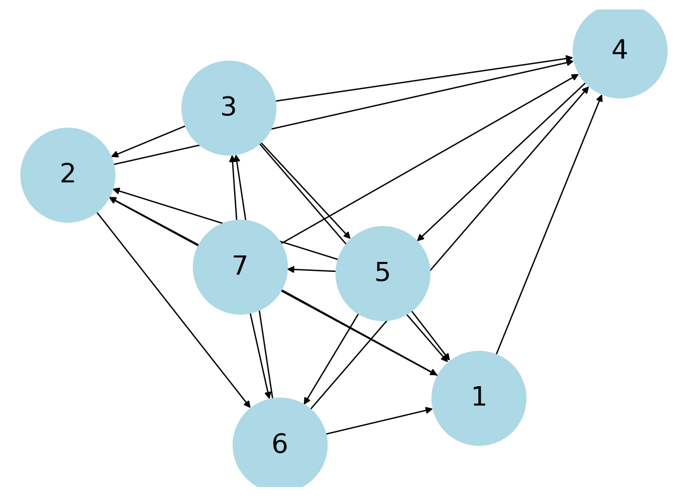
Note that I used alpha = 0.85 and the teleportation vector is [1/7, 1/7, 1/7, 1/7, 1/7, 1/7, 1/7].
# reverse graph
T = M.transpose()
D = np.identity(7)
for i in range(7):
D[i,i] = 1/(np.sum(T[i],axis = 0))
# transition matrix
P = np.dot(T.transpose(),D)
# teleportation vector
v = np.array([1/7, 1/7, 1/7, 1/7, 1/7, 1/7, 1/7])
a = 0.85
lhs = (np.identity(7) - a * P)
rhs = (1-a) * v
x = np.linalg.solve(lhs, rhs)
df = pd.DataFrame({'Team': team, 'Page Rank': x}).sort_values(by='Page Rank', ascending=False).set_index('Team')
df| Page Rank | |
|---|---|
| Team | |
| 5 | 0.244525 |
| 7 | 0.184189 |
| 3 | 0.176270 |
| 6 | 0.130332 |
| 4 | 0.125352 |
| 2 | 0.079666 |
| 1 | 0.059667 |
Note I couldn’t figure out how to rename the nodes to 1-7 instead of 0-6.
# weighted adjacency matrix
M = np.zeros((7,7))
M[0,1] = 4
M[6,2] = 8
M[1,3] = 7
M[3,4] = 3
M[2,1] = 7
M[4,0] = 7
M[5,0] = 23
M[2,0] = 15
M[6,1] = 6
M[1,5] = 18
M[2,3] = 13
M[6,3] = 14
M[4,6] = 7
M[5,3] = 13
M[2,4] = 7
M[4,5] = 18
M[6,0] = 45
M[4,1] = 10
M[6,5] = 19
M[0,3] = 14
M[5,2] = 13
display(M)
G = nx.from_numpy_array(np.matrix(M), create_using=nx.DiGraph)
layout = nx.spring_layout(G)
nx.draw(G, layout, with_labels=True, node_size = 1000, node_color = 'lightblue', font_size = 20, font_color = 'black')
labels = nx.get_edge_attributes(G, "weight")
nx.draw_networkx_edge_labels(G, pos=layout, edge_labels=labels)
plt.show()
Msquared = np.dot(M,M)
vertex_power_matrix = Msquared + M
vertex_power = np.sum(vertex_power_matrix, axis=1)
df = pd.DataFrame({'Team': team, 'Vertex Power': vertex_power}).sort_values(by='Vertex Power', ascending=False).set_index('Team')
dfarray([[ 0., 4., 0., 14., 0., 0., 0.],
[ 0., 0., 0., 7., 0., 18., 0.],
[15., 7., 0., 13., 7., 0., 0.],
[ 0., 0., 0., 0., 3., 0., 0.],
[ 7., 10., 0., 0., 0., 18., 7.],
[23., 0., 13., 13., 0., 0., 0.],
[45., 6., 8., 14., 0., 19., 0.]])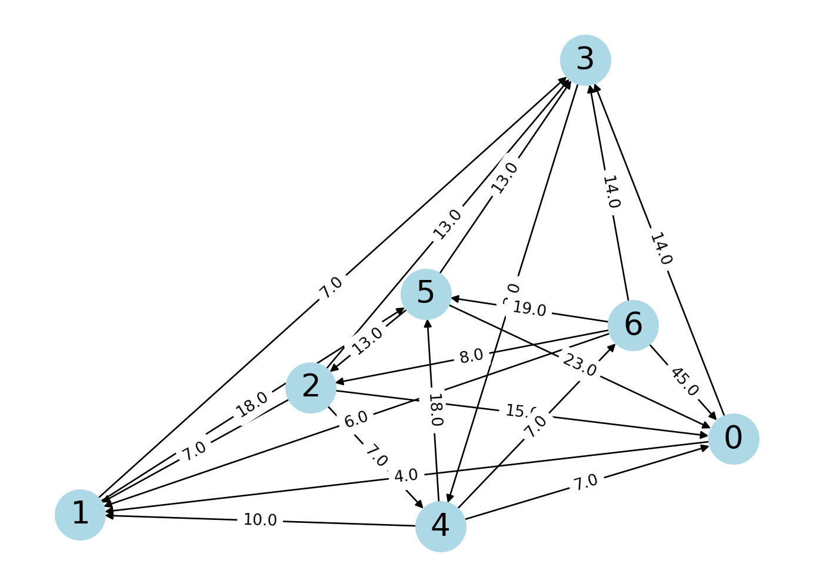
| Vertex Power | |
|---|---|
| Team | |
| 7 | 2361.0 |
| 5 | 1944.0 |
| 6 | 1048.0 |
| 2 | 928.0 |
| 3 | 820.0 |
| 1 | 160.0 |
| 4 | 129.0 |